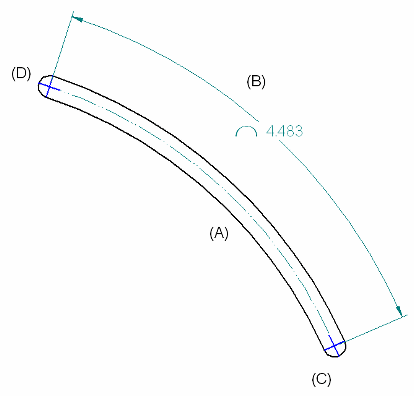
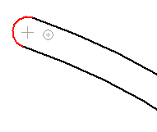
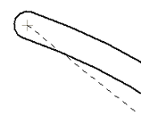
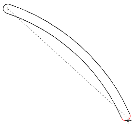
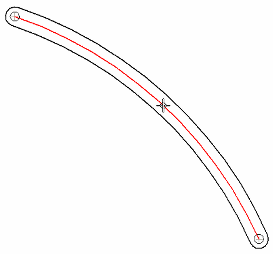
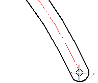
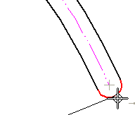

Example: Dimension a curved slot
This example shows two ways to add the following dimensions and annotations to a curved slot:
-
Centerline (A)
-
Length of arc (B)
-
Center marks (C) and (D)

For part views, you can use the Automatic Centerlines command option to retrieve the centerlines and center marks from the model to the drawing view. Slots and other curved features receive annotations as specified on the Center Line and Center Mark Options dialog box, which you can open from the Automatic Centerlines command bar..
Place a dimension on a curved slot in a part view
-
Starting with a curved slot in a model document, create a drawing view that shows the curved slot by doing the following:
-
Choose the File menu→New tab→Drawing of Active Model command
 .
. -
In the Create Drawing dialog box, select a drawing template with file name extension *.dft.
-
In the Drawing View Wizard, set the drawing view creation options and drawing view orientation you want to use.
To learn how, see the help topic, Create Drawing Views of a Part or Assembly.
-
-
Select the Home tab→Annotation group→Centerline command.
-
On the Centerline command bar:
-
Select the Arc centerline type.
-
Select By 2 Arcs from the Placement Options list.
-
When prompted, click two concentric arcs.
-
When prompted to click the start point, locate the arc at one end of the slot and press C on the keyboard. Do not click.
This automatically selects the center point of the arc.


-
When prompted to click the end point, locate the arc at the opposite end of the slot and press C on the keyboard. Do not click.

-
When prompted to click a point for the arc, move the cursor to the middle of the slot so that the centerline curves in the appropriate direction, and click.

The centerline is now complete.
-
-
Place a centerline dimension
-
Choose the Smart Dimension command
 , and then select the centerline.
, and then select the centerline. -
On the Smart Dimension command bar, do the following:
-
Click Angle.
-
From the Dimension Type list, select Feature Callout.
-
-
Click to place the arc length dimension.
-
-
Add center marks
-
Choose the Center Mark command .
-
On the Center Mark command bar, from the Orientation list, select By 2 Points.
-
At one end of the slot, specify the center point of the center mark by clicking the end of the slot centerline.

-
At the same end, specify the location of the center mark by clicking the center of the curved end of the slot.

-
Repeat steps 8 and 9 to place a center mark at the other end of the slot.
-
Draw a curved slot and then add annotations
-
To create the curved slot in a draft document, draw a single curved line using the Arc By 3 Points command:
 .
. -
Choose the Symmetric Offset command.
-
In the Symmetric Offset Options dialog box, do all of the following:
-
In the Width box, type a value for slot width.
-
In the Radius box, type a radius value for the curved ends of the slot.
-
Under Cap Type, select the Offset Arc option.
Tip:The Offset Arc option creates a centerline that does not extend to the ends of the slot.
-
-
Select the arc line you drew in step 1, and click the green check mark on the command bar to automatically creates both the curved slot and the centerline.
-
Click Smart Dimension
, and then select the centerline. -
On the Smart Dimension command bar, select the Length option, and then click to place the arc length dimension.
-
Choose the Center Mark command .
-
On the Center Mark command bar, from the Orientation list, select By 2 Points.
-
At one end of the slot, specify the center point of the center mark by clicking the end of the slot centerline.
-
At the same end, specify the location of the center mark by clicking the center of the curved end of the slot.
-
Repeat steps 9 and 10 to place a center mark at the other end of the slot.
How do I
Example: Dimension the length of a lineExample: Dimension the diameter of a circle
Dimension similarly sized holes
Place concentric diameter dimensions
Place a feature callout dimension
Place a 3D dimension on a pictorial drawing view
Define smart feature properties in the Dimension style
Look up more details
Smart Dimension commandSmart Dimension command bar